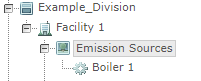

If the parent object is associated with a tag, all objects under the parent object will inherit this tag. Tag inheritance simplifies tag association and avoids unnecessary duplication of tags.
If a Division has an assigned tag, all objects under the Division, such as Facility, Unit, POI, and Requirements, will inherit this tag. The tag applied to Facility is automatically present in the Requirement.
Tags should be applied at the highest system model object level with which they associate. For example, if a tag is a property of the Facility, it should be applied at the Facility level rather than to each unit underneath that Facility.
In the example below, Facility 1 has a unit, called "Emission Sources", and a POI, called "Boiler 1". The tag scheme is called "Emission Unit Type" and the tag is called "Boiler".

If you assigned a tag "Boiler" to Facility 1, then Unit "Emission Sources", and POI "Boiler 1" will inherit this tag.
In this example, if the POI "Boiler 1" has several Requirements, you would want to apply the tag "Boiler" to the POI rather than to each individual requirement underneath that POI.